Da garimpagem à venda: inteligência comercial em ação.
Jardins do Janga Condomínio Clube, Bloco 10, apto. 205. Imóvel desocupado, aquisição financiada, diligência presencial e estratégia de revenda apoiada pela experiência da SA no mesmo condomínio.
Janga • Paulista/PE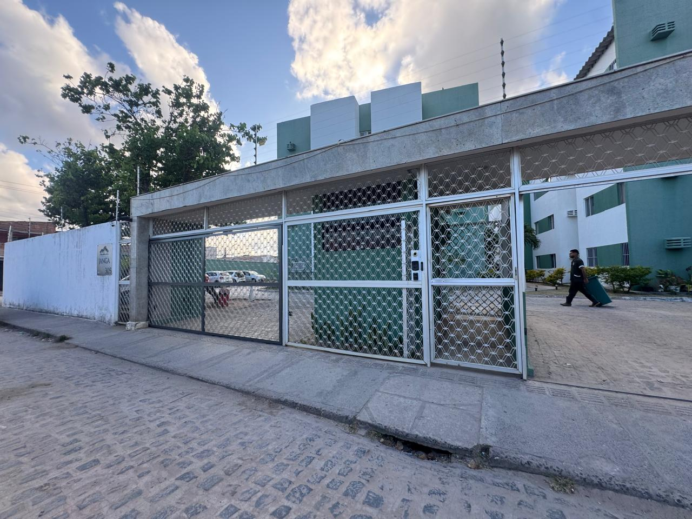
Resumo da tese desta operação.
O imóvel foi documentado em visita presencial, com registro das áreas comuns e dos ambientes internos. A estratégia de saída envolveu aquisição financiada e revenda com crédito habitacional, destacando capital necessário, resultado e riscos da operação.
O empreendimento foi lido em campo antes da venda.
A diligência presencial permitiu verificar portaria, circulação interna, áreas comuns e a percepção geral do condomínio. O vídeo abaixo reúne esse reconhecimento visual e reforça o padrão operacional da SA nas arrematações acompanhadas presencialmente.
Leitura comercial em campo
Vídeo da diligência externa, preservado como registro do condomínio e das áreas comuns.
Reconhecimento real
Registro do condomínio e dos acessos, sem depender apenas de anúncio ou documento.
Leitura comercial
Áreas comuns, circulação e conservação ajudam a qualificar a saída comercial do ativo.
Imóvel desocupado
A condição observada favoreceu o cronograma de revenda sem etapa prévia de desocupação.
Venda estruturada
A operação já foi analisada com estratégia de crédito e compatibilidade com o perfil do comprador.
Imagens do condomínio para sustentar a apresentação ao investidor.
As fotografias abaixo substituem a antiga galeria de presença pessoal e passam a priorizar o ativo: fachada, portaria, bloco, lazer, circulação e equipamentos do empreendimento.
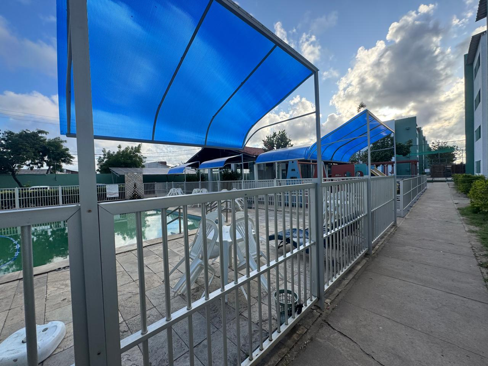
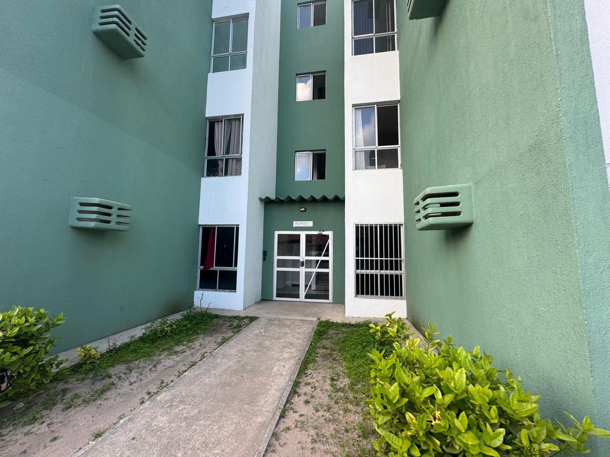

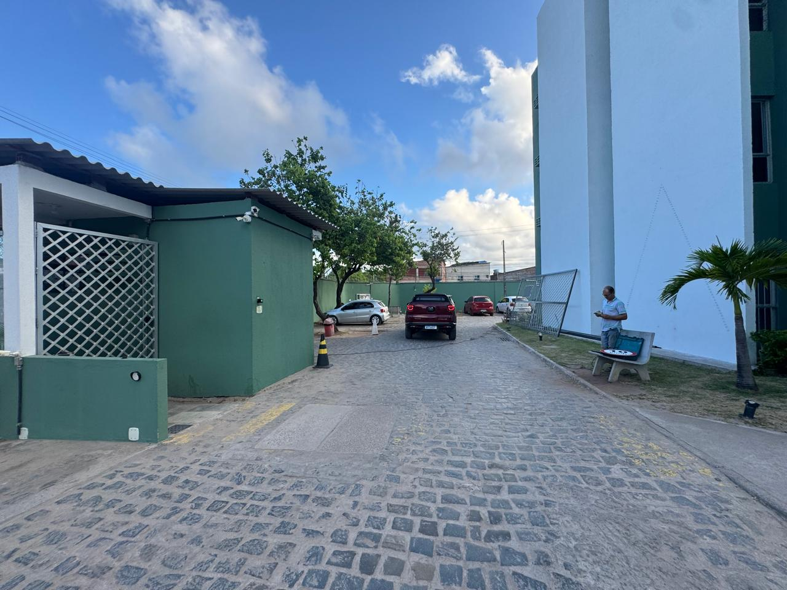
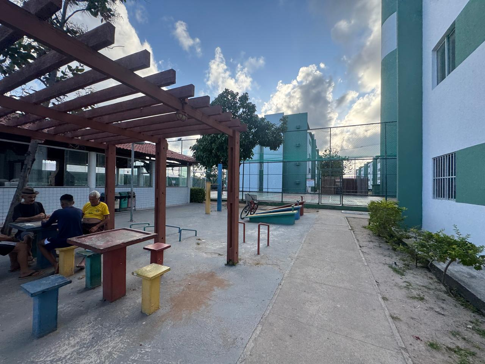
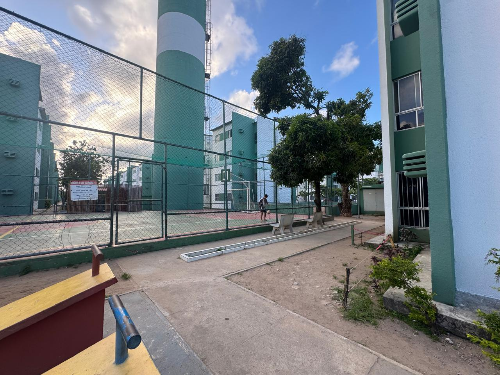
A abertura da porta: o marco da diligência.
O registro original mostra o chaveiro realizando a abertura do apartamento e a entrada no imóvel. Mantivemos o vídeo integral, com áudio, incluindo a fala de apresentação da SA. Assim o investidor acompanha o momento da abertura e o primeiro reconhecimento interno, antes da vistoria detalhada.
Entrada no imóvel · Vídeo original
Abertura pelo chaveiro e primeiros registros do interior. A narração original foi preservada para documentar o contexto da diligência.
1min38s • Com áudio • Reprodução manual • Sem cortes
O imóvel por dentro, com imagens reais da vistoria.
Após o registro da abertura pelo chaveiro, esta segunda gravação mostra a circulação pelo apartamento e as condições visíveis na data da visita. O vídeo de aproximadamente 52 segundos foi preservado sem áudio, com reprodução manual.
Vistoria interna · Vídeo integral
Registro audiovisual do apartamento, incluindo a cozinha integrada, sala e demais ambientes mostrados na gravação.
Sem áudio • Reprodução manual • Sem reforma realizada pela SA nesta operação.
Galeria do apartamento
Sete fotografias reais mostrando a condição dos ambientes. As imagens não devem ser interpretadas como registro de reforma ou garantia de pleno funcionamento das instalações.
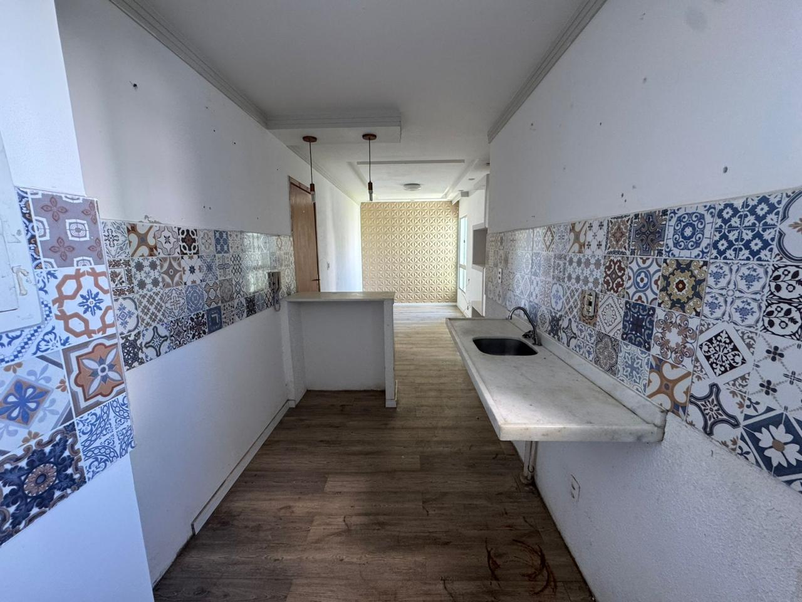
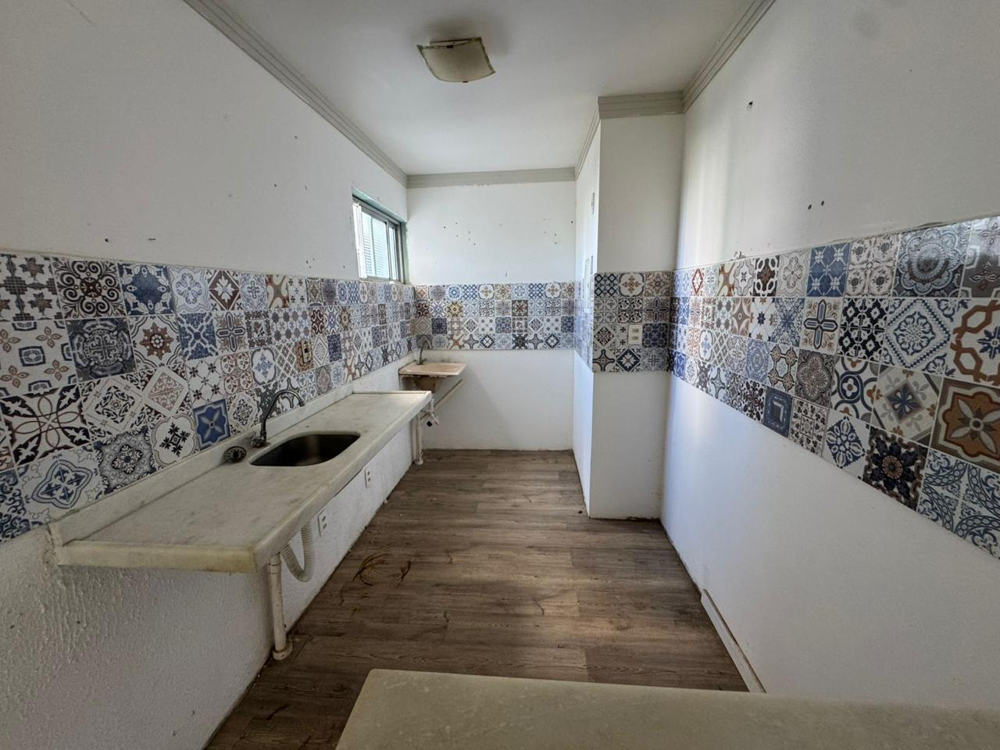
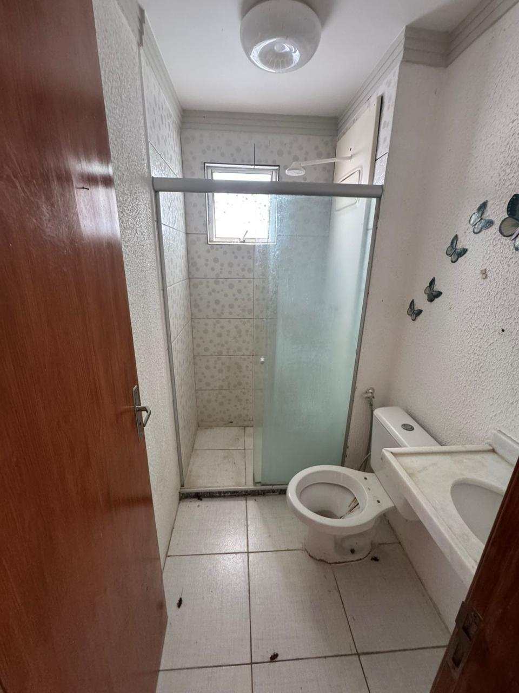
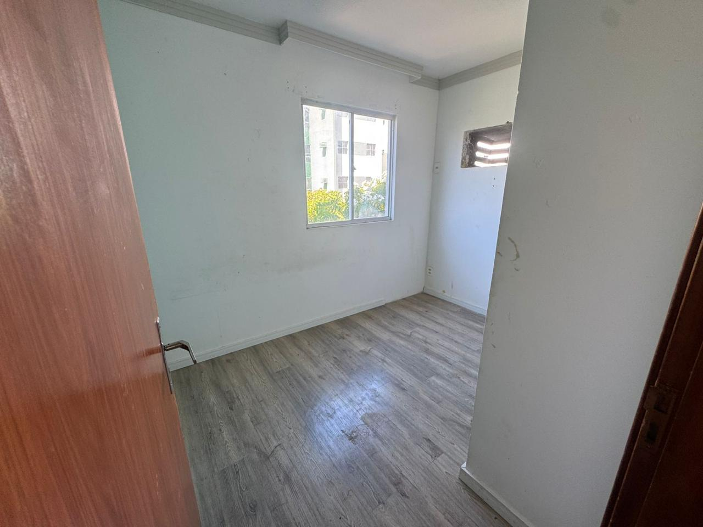
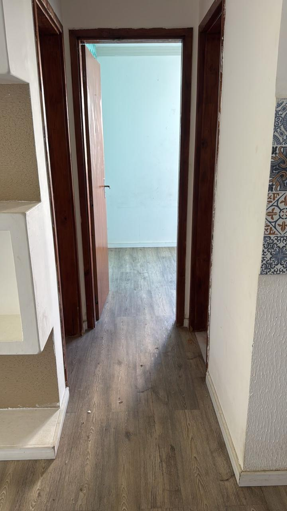
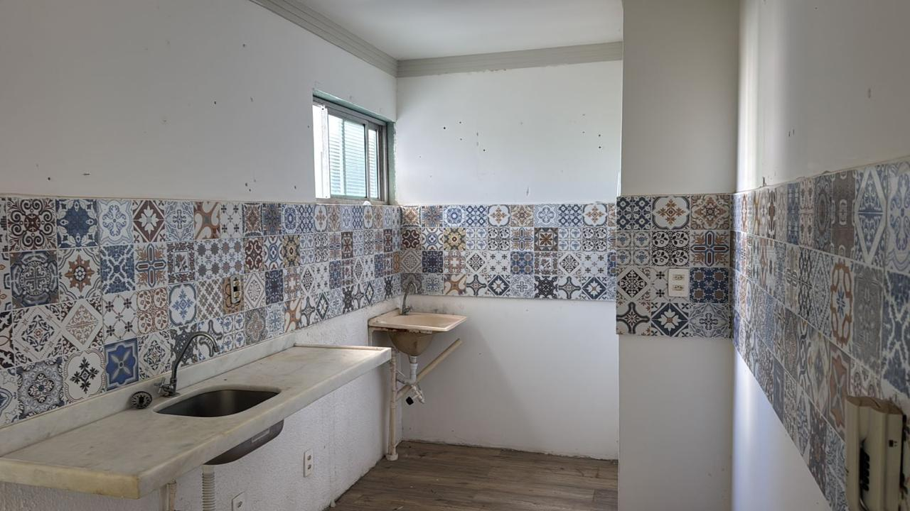
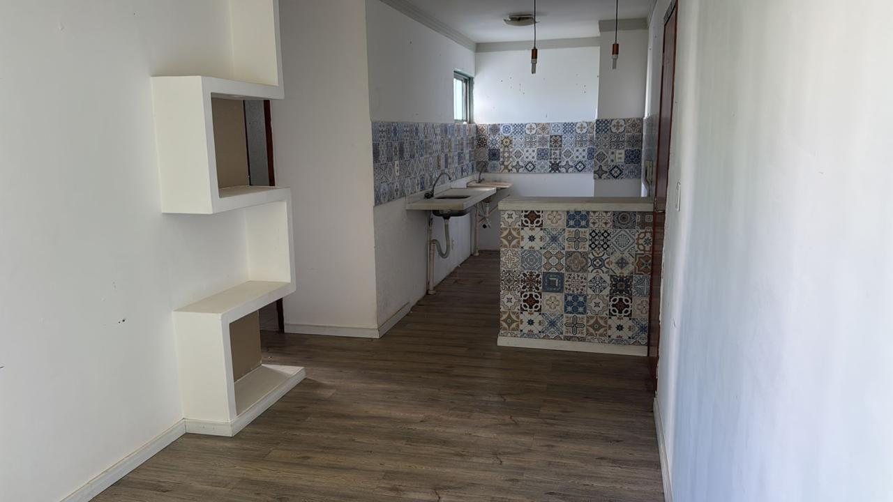
Análise documental e confidencialidade.
A SA utiliza documentação de aquisição, registro e revenda na análise da operação. Documentos contratuais, dados pessoais e comprovantes permanecem no acervo privado e não integram esta apresentação pública.
Composição da compra e despesas verificadas.
O financiamento original não é uma despesa integral à vista do investidor. A entrada, as despesas acessórias e os encargos efetivamente suportados compõem o fluxo próprio; a dívida é quitada na revenda.
| Rubrica | Valor |
|---|---|
| Entrada da aquisição CAIXA | R$ 4.306,69 |
| Certidão de matrícula / inteiro teor | R$ 61,06 |
| ITBI da aquisição | R$ 2.601,73 |
| Registro da aquisição | R$ 2.829,24 |
| IPTU / encargos 2025 | R$ 855,70 |
| IPTU / encargos 2026 | R$ 703,31 |
| Bombeiros 2022–2024 | R$ 374,03 |
| Bombeiros 2025 | R$ 157,87 |
| Débito de condomínio informado | R$ 17.500,00 |
| Assessoria SA — 10% da aquisição | R$ 8.613,37 |
| Prestações e encargos do financiamento | A apurar |
O contrato é de R$ 160 mil. O caixa é outra conta.
| Origem contratual | Valor |
|---|---|
| Financiamento da compradora | R$ 128.000,00 |
| Subsídio FGTS/União | R$ 18.767,00 |
| Crédito bancário + subsídio | R$ 146.767,00 |
| Recursos próprios da compradora — fora do recebimento informado | R$ 13.233,00 |
| Valor total do contrato | R$ 160.000,00 |
| Quitação do financiamento original indicada no contrato | − R$ 81.249,57 |
R$ 146.767,00 de financiamento e subsídio menos R$ 81.249,57 destinados à quitação. Este é o montante bancário remanescente antes das despesas do investidor, não uma confirmação de crédito líquido ou lucro.
Custos de revenda suportados pelo investidor.
Abaixo estão reunidas as despesas consideradas na revenda, sem manter a antiga coluna narrativa. As observações essenciais ficam consolidadas em nota ao final da seção.
| Documento / serviço | Valor |
|---|---|
| ITBI da revenda | R$ 1.920,00 |
| Registro da revenda | R$ 3.508,64 |
| Seguro / transferência à compradora | R$ 1.193,31 |
| Boleto de seguro residencial (arquivo “taxa relacionamento”) | R$ 1.908,34 |
| Certidão vinculada ao registro (outubro) | R$ 61,06 |
| Certidão adicional (julho) | R$ 61,06 |
| Certidão de pacto antenupcial (julho) | R$ 61,06 |
O resultado da operação.
Além do quadro-resumo, este bloco passa a incorporar também os painéis visuais da análise financeira em cenário SAC, no mesmo espírito usado na aba de oportunidades.
Na apuração da revenda, consideram-se R$ 128.000,00 de financiamento e R$ 18.767,00 de subsídio (R$ 146.767,00). Os R$ 13.233,00 de recursos próprios da compradora não integram o recebimento considerado. A quitação bancária de R$ 81.249,57 não é contada duas vezes. O IR foi considerado em R$ 0,00 segundo a informação de isenção fornecida pelo investidor, ainda sujeita à verificação do enquadramento fiscal.
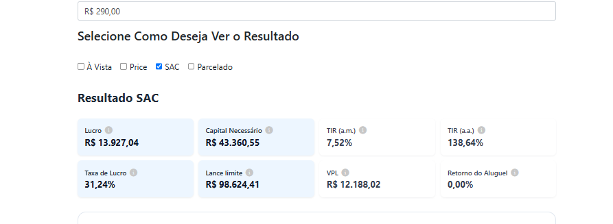
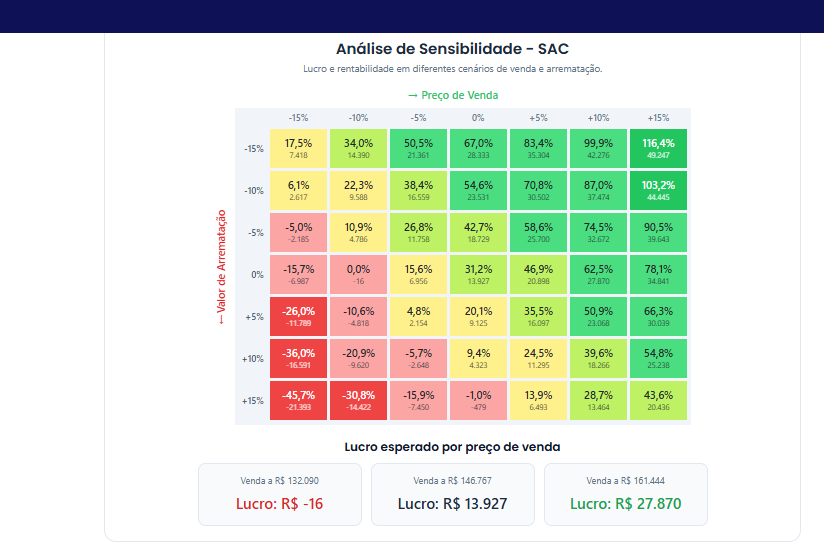
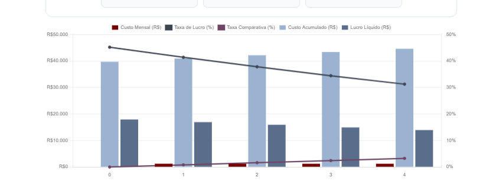
Comparação de retorno sobre o mesmo capital.
Comparação ilustrativa do ganho financeiro em quatro meses para um mesmo capital inicial de R$ 43.360,55. As taxas mensais abaixo são hipóteses matemáticas, não cotações históricas verificadas de CDI, CDB, poupança ou índices de mercado. A operação imobiliária envolve riscos de liquidez, prazo, custos e execução distintos dos investimentos financeiros.
| Alternativa | Ganho em 4 meses | Retorno | Capital final | Leitura |
|---|---|---|---|---|
| Operação Jardins do Janga | R$ 13.927,04 | 31,24%* | R$ 57.287,59 | Lucro e rentabilidade exibidos no cenário SAC da operação |
| Cenário hipotético — 0,8% a.m. | R$ 1.404,28 | 3,24% | R$ 44.764,83 | Hipótese de juros compostos por quatro meses |
| Cenário hipotético — 1,0% a.m. | R$ 1.760,61 | 4,06% | R$ 45.121,16 | Hipótese de juros compostos por quatro meses |
| Cenário hipotético — 0,5% a.m. | R$ 873,74 | 2,01% | R$ 44.234,29 | Hipótese de juros compostos por quatro meses |
* Rentabilidade de 31,24% preservada conforme o demonstrativo SAC apresentado. A métrica pode não coincidir com a divisão simples do lucro pelo capital necessário. Valores de alternativas calculados por juros compostos, sem impostos ou taxas.